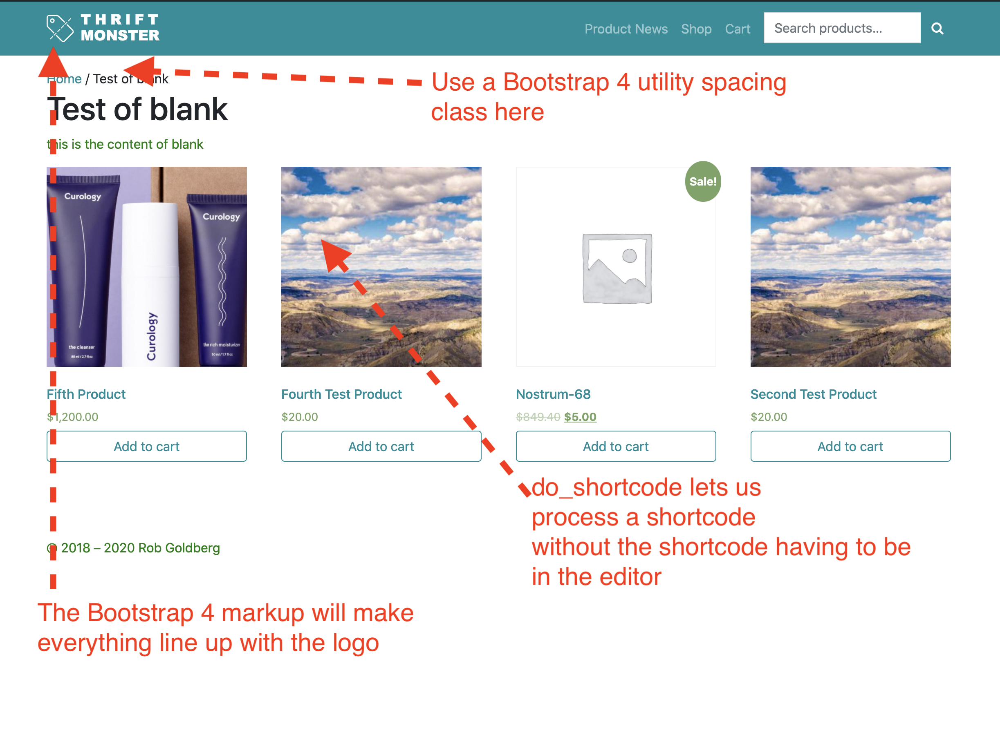

Code Samples for Week 7
Code Sample 7.1: Page Templates
A Super Basic Template

- Copy the page-templates FOLDER from understrap to understrap-child-master.
- Copy the code below and save it as
blank-basic.php within the page-templates folder within understrap-child-master.
- Create a new page and over in the document tab on the right (Gutenberg) choose the "Simplified Page Template" template. Add a title and at least one paragraph.
- View the page and you will see that the heading is unstyled and that the content is not aligned with the logo.
- To fix this, put beginning Bootstrap 4 markup after the comment provided (reference: https://getbootstrap.com/docs/4.5/layout/grid/) - additionally, use a BS4 utility spacing class (reference: https://getbootstrap.com/docs/4.5/utilities/spacing/) to make a space above the breadcrumb.
- Visit this page: https://developer.wordpress.org/reference/functions/the_title/ and then figure out how to use PHP arguments to wrap the title in h1 beginning and end tags
- Use a Woocommerce shortcode and the
do_shortcode function (reference: https://developer.wordpress.org/reference/functions/do_shortcode/) to output 4 products like in the screenshot
- Find the comment where you put the ENDING Bootstrap 4 markup.
- Screenshot the page and DM it to me in Slack when done
A More Complex Custom Template Using Two WordPress Loops, One standard and One Using WP_Query
- Copy the below code into a file called
archive-products-v2.php and put it in the page-templates FOLDER you copied previously.
- Create a new page and over in the document tab on the right (Gutenberg) choose the "Products Archive - all in one file" template.
- Save it and see if you have custom archive of all of your products that lists all of your products but with a different approach than the standard Woocommerce "Shop" page that the Woocommerce plugin makes for you.